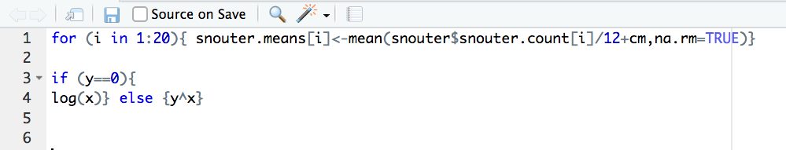
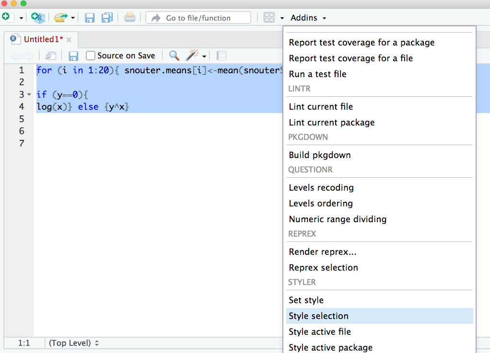
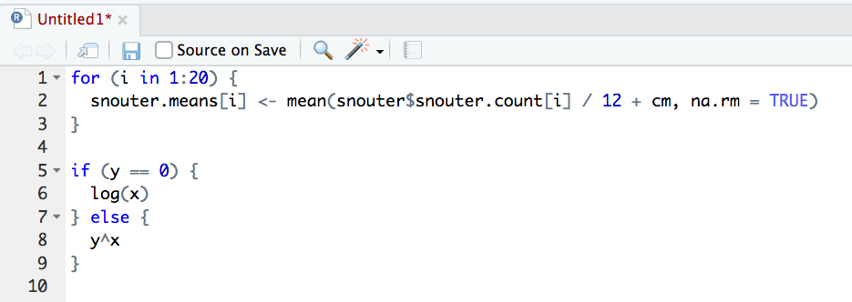

1.6 Writing R code
A quick note or two about writing R code and creating R scripts. Unless you’re doing something really quick and dirty we suggest that you always write your R code as an R script. R scripts are what make R so useful. Not only do you have a complete record of your analysis, from data manipulation, visualisation and statistical analysis, you can also share this code (and data) with friends, colleagues and importantly when you submit and publish your research to a journal. With this in mind, make sure you include in your R script all the information required to make your work reproducible (author names, dates, sampling design etc). This information could be included as a series of comments # or, even better, as code incorporating commentary into an R markdown document. Here is an example of including meta-information at the start of an R script
# Title: Time series analysis of snouters
# Purpose : This script performs a time series analyses on snouter count data.
# Data consists of counts of snouter species collected from 18 islands
# in the Hy-yi-yi archipelago between 1950 and 1957.
# For details of snouter biology see:
# https://en.wikipedia.org/wiki/Rhinogradentia
# Project number: #007
# Data file: '/Users/Another/snouter_analysis/snouter_pop.txt'
# Author: A. Nother
# Contact details: a.nother@uir.ac.uk
# Date script created: Mon Dec 2 16:06:44 2019 ------------------------------
# Date script last modified: Thu Dec 12 16:07:12 2019 ----------------------This is just one example and there are no hard and fast rules so feel free to develop a system that works for you. One really useful shortcut in RStudio is to automatically include a time and date stamp in your R script. To do this, write ts where you want to insert your time stamp and then press the ‘shift + tab’ keys. RStudio will magically convert ts into the current date and time and also automatically comment out this line with a #.
How you write your code is more or less up to you although your goal should be to make it as easy to read as possible (for you and others). Whilst there are no rules (and no code police), we encourage you to get into the habit of writing readable R code by adopting a particular style. We suggest that you follow Google’s R style guide whenever possible. This style guide will help you decide where to use spaces, how to indent code and how to use square [ ] and curly { } brackets amongst other things. If all that sounds like too much hard work you can install the styler package which includes an RStudio add-in to allow you to interactively restyle selected code (or entire files and projects) with the click of your mouse. You can find more information about the styler package including how to install here. Once installed, you can highlight the code you want to restyle, click on the ‘Addins’ button at the top of RStudio and select the ‘Style Selection’ option. Here is an example of poorly formatted R code

Now highlight the code and use the styler package to reformat

To produce some nicely formatted code
